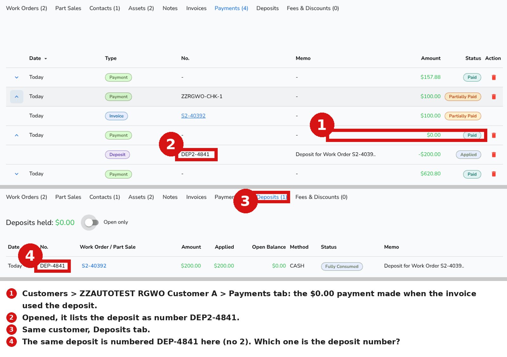

DRAFT - not filed. Classified as a question for Chris (c), not a bug: the written sources do not settle it.
A deposit gets a number when it is taken. The same deposit appears on two tabs of the customer page, with two different numbers.
Customer "ZZAUTOTEST RGWO Customer A", work order S2-40392, a $200.00 Cash deposit taken on Nov 16, 2026. On the Deposits tab it is DEP-4841. On the Payments tab, open the $0.00 payment (made when the invoice used the deposit): the same deposit is DEP2-4841.

Customers > the customer > Deposits tab (No. column) and Payments tab (open the $0.00 row). Work order and invoice numbers are not affected.
Actual: Deposits tab: DEP-4841. Payments tab: DEP2-4841.
Expected: Not settled in writing - see the question. (If fixed: one number for the deposit on every screen.)
Confluence 263094273 "Deposits for Work Orders" (last modified 16 Apr 2026), story SV-5675: "The deposit will get a "CP-" unique number same to a credit (e.g. CP3-1234)". SV-10762 (Done, Oct 2026): "Decide which format the deposit memo should use, and make every deposit surface consistent."
Staging (app.staging.shopview.com), build v26.45.4-f3d3d2d, 16 Nov 2026, location "ZZAUTOTEST R365 Location C with a name longer than the chip", signed in as Admin. Browser and test machine set to the location's time zone (America/Edmonton).